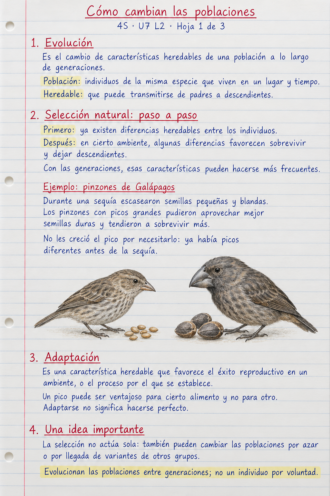
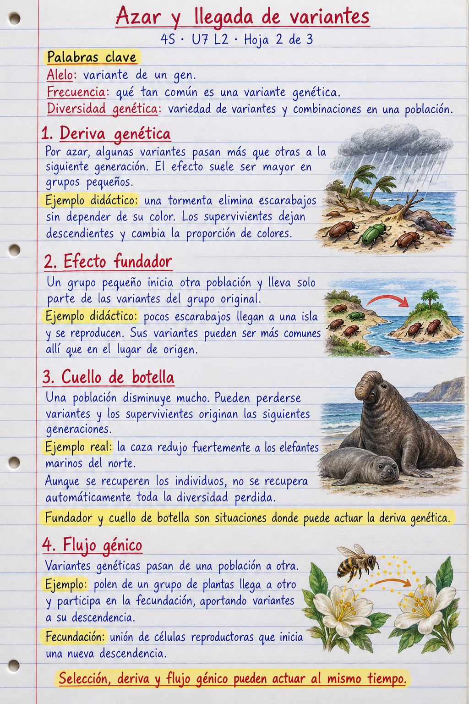
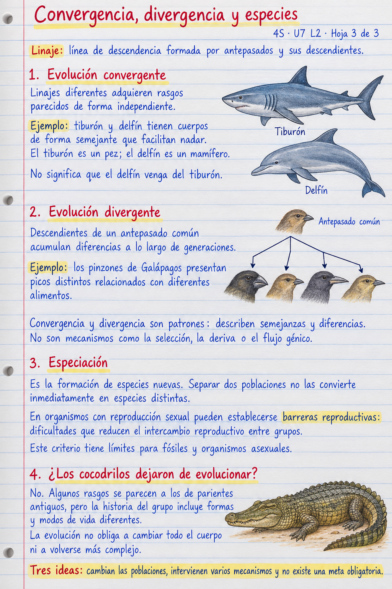

<!doctype html><html lang="es"><meta charset="utf-8"><meta name="viewport" content="width=device-width,initial-scale=1"><title>Mecanismos y patrones evolutivos · 4S</title><style>body{margin:0;background:#f5f7f6;color:#203940;font:17px/1.55 system-ui}header,main{max-width:1000px;margin:auto;padding:20px}h1{font-size:26px}h2{font-size:22px}nav{display:flex;gap:18px;flex-wrap:wrap}a{color:#096575}img{width:100%;height:auto;display:block;margin:24px 0}li{margin:10px 0}@media print{header,.fuentes{display:none}main{padding:0}img{max-height:98vh;object-fit:contain;break-after:page;margin:0}}</style>
<header><h1>Mecanismos y patrones evolutivos</h1><nav><a href="01-seleccion-cuaderno.png">Hoja 1: selección</a><a href="02-azar-flujo-cuaderno.png">Hoja 2: azar y flujo</a><a href="03-patrones-cuaderno.png">Hoja 3: patrones</a><a href="#fuentes">Fuentes y videos</a></nav></header><main>
<a href="01-seleccion-cuaderno.png"></a>
<a href="02-azar-flujo-cuaderno.png"></a>
<a href="03-patrones-cuaderno.png"></a>
<section class="fuentes" id="fuentes"><h2>Fuentes y videos</h2><ul>
<li><a href="https://www.biointeractive.org/es/classroom-resources/el-origen-de-las-especies-el-pico-del-pinzon">HHMI: El pico del pinzón, documental en español</a>. Caso de investigación real; 15 min 54 s. Pregunta: ¿qué midieron, además de observar los picos?</li>
<li><a href="https://evolution.berkeley.edu/evolution-101/mechanisms-the-processes-of-evolution/genetic-drift/">UC Berkeley: deriva genética</a>.</li>
<li><a href="https://evolution.berkeley.edu/bottlenecks-and-founder-effects/">UC Berkeley: fundador y cuello de botella</a>.</li>
<li><a href="https://evolution.berkeley.edu/evolution-101/mechanisms-the-processes-of-evolution/gene-flow/">UC Berkeley: flujo génico</a>.</li>
<li><a href="https://www.nhm.ac.uk/discover/convergent-evolution.html">Natural History Museum: convergencia, tiburones y delfines</a>.</li>
<li><a href="https://pmc.ncbi.nlm.nih.gov/articles/PMC8059953/">Investigación: diversidad evolutiva de parientes de cocodrilos</a>. Comparar anatomías y ambientes; parecerse no significa no evolucionar.</li>
<li><a href="https://podcasts.ox.ac.uk/nature-human-beings-and-question-their-ultimate-origin">Oxford: diálogo de Dawkins, Williams y Kenny</a>. Consulta opcional del docente en inglés, 1 h 28 min. No es una prueba experimental ni es necesario verlo completo para esta clase.</li>
</ul><h2>Para repasar los conceptos</h2><ol><li>¿Qué diferencia selección natural, deriva genética y flujo génico?</li><li>¿Qué ocurre en el efecto fundador y qué ocurre en un cuello de botella?</li><li>¿Cómo se distinguen convergencia, divergencia y especiación?</li></ol></section></main></html>
